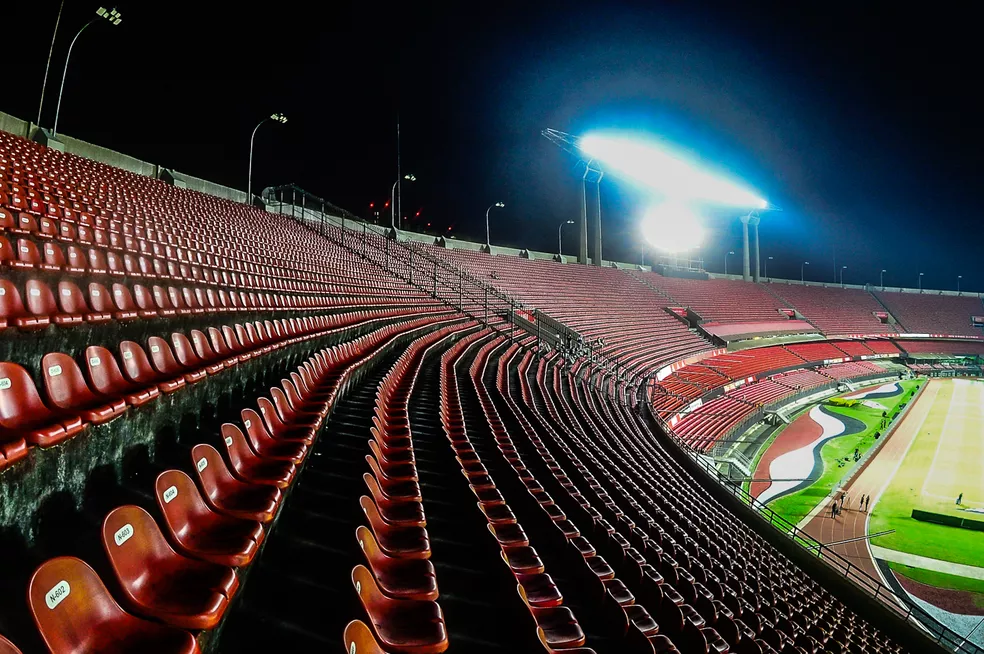

História do São Paulo Futebl Clube
A mais jovem agremiação dentre os grandes do futebol brasileiro, o São Paulo FC é o clube mais vencedor do Brasil!
Fundado em 25 de janeiro de 1930 e marcado por histórias de superação, como a refundação do clube em 1935 ou os tempos difíceis da construção do Morumbi, o Tricolor Mais Querido do planeta
é o único clube brasileiro a ter conquistado a América e o Mundo por três vezes.
É ainda o único Tricampeão consecutivo do Campeonato Brasileiro e o primeiro a conquistá-lo por seis vezes. Tri-Hexacampeão Brasileiro.
Dentro das quatro linhas, foi vestindo o Manto Tricolor que o goleiro Caxambu inventou a ponte, que Roberto Dias tornou-se o maior marcador de Pelé, que Raí e Telê comemoraram a vitória sobre o Barcelona, que Müller marcou o gol que fez o italiano Costacurta perder o rumo de Milão, que Rogério Ceni passou a ser o Maior Goleiro Artilheiro do Mundo, além de tantos outros grandes momentos da gloriosa trajetória são-paulina!
Foi também defendendo as cores do São Paulo FC que o saltador Adhemar Ferreira da Silva chegou ao ouro olímpico e bateu duas vezes o recorde mundial do salto triplo, e que Éder Jofre, o Galo de Ouro dos 50 nocautes, surgiu para os ringues que um dia estariam a seus pés.
Fora de campo, o Tricolor desafiou os críticos e a lógica e construiu o maior estádio particular do Brasil, o Estádio do Morumbi. Seguiu pioneiro em sua aposta na infraestrutura como pilar da excelência no esporte, erguendo ao longo do tempo seu Centro de Treinamento e o Centro de Formação de Atletas. O resultado? O mundo conheceu três vezes.
Dono de um patrimônio invejável, detentor de títulos inalcançáveis para muitos e em movimento constante em busca da excelência, o Tricolor Paulista faz jus a seu hino: dentre os grandes, és o primeiro!
Fonte Site Oficial
